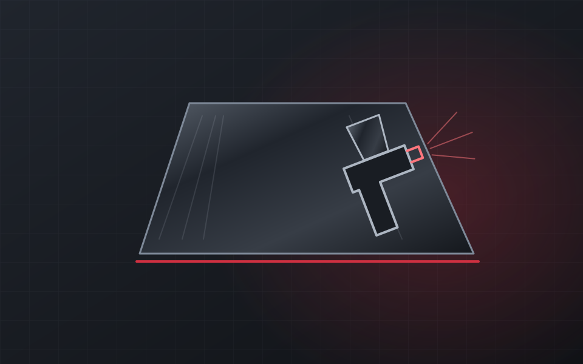
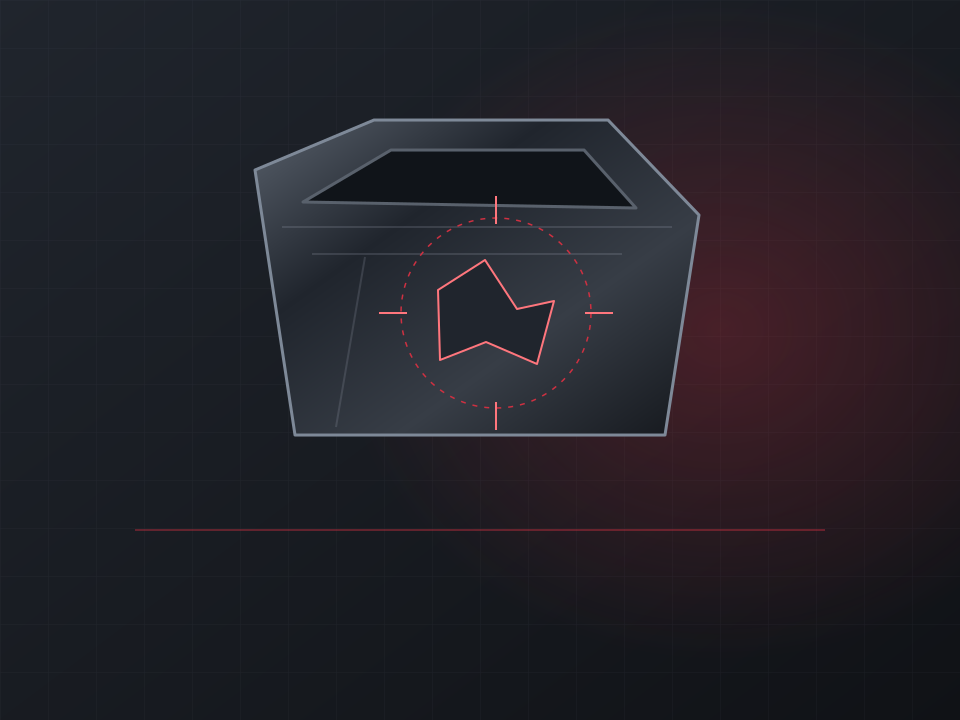
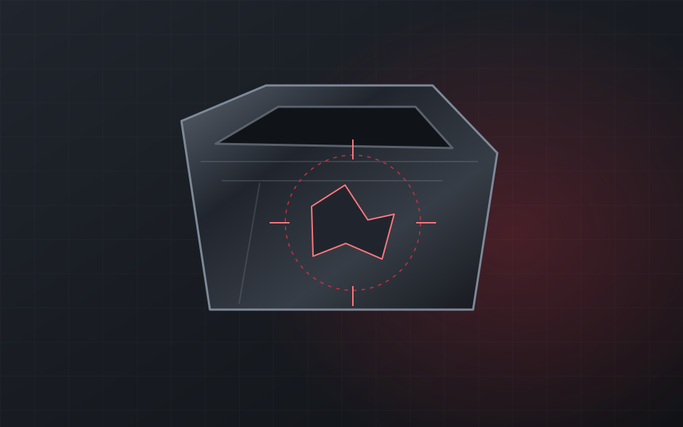
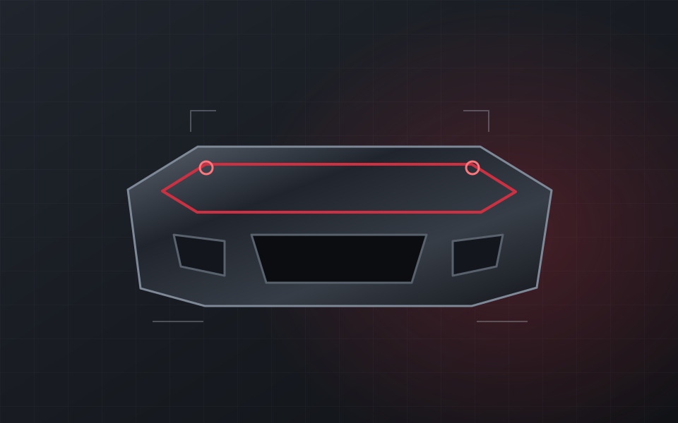
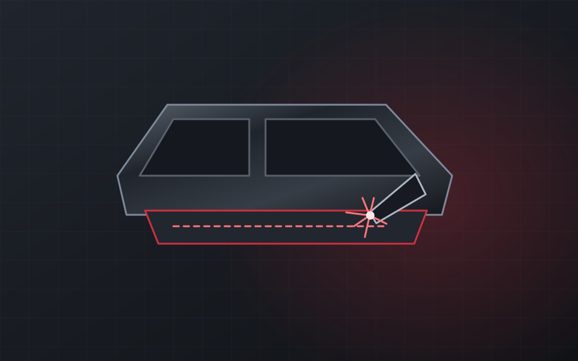
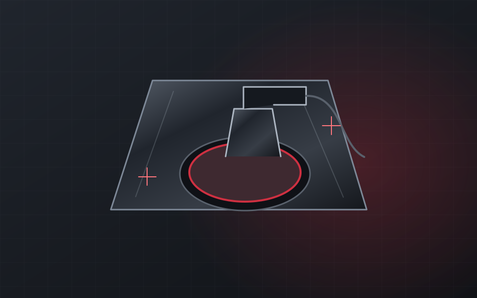
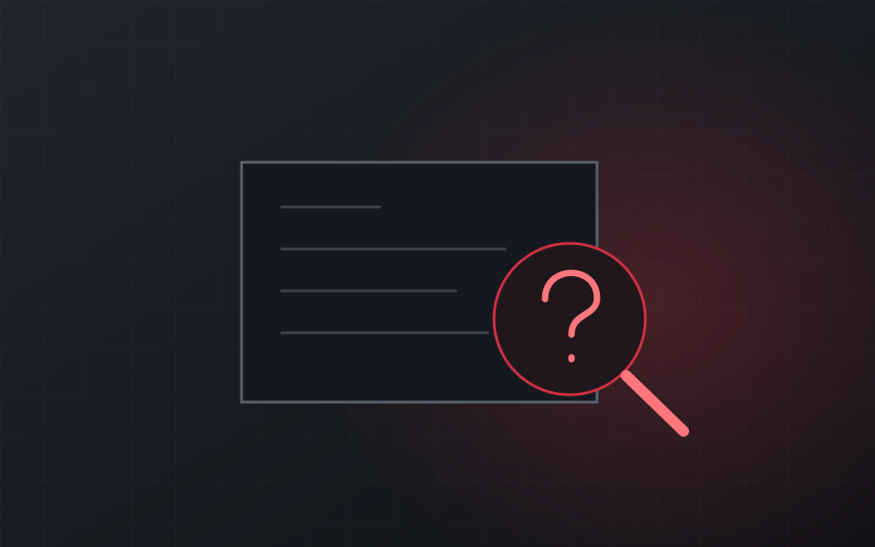

01Иллюстрация услугиПокраска деталей кузова
Покраска бамперов, капота, дверей и крыльев. Объём подготовки и подбор цвета обсуждаются после оценки.
Вмятины, царапины, повреждения после парковки. Покраска деталей, кузовной ремонт и полировка в Elit Auto.

Знакомьтесь, Elit Auto
Крыло после неудачной парковки, вмятина на двери, царапины на кузове — для каждой задачи нужен свой объём работ.
В Elit Auto занимаются кузовным ремонтом, покраской деталей, ремонтом бамперов, сваркой порогов и полировкой. Начните с описания повреждения и фотографий автомобиля.
Обсудить мою задачу01 / Услуги
От повреждённой детали
до аккуратного внешнего вида.

01Иллюстрация услугиПокраска бамперов, капота, дверей и крыльев. Объём подготовки и подбор цвета обсуждаются после оценки.

02Иллюстрация услугиВосстановление повреждённых деталей и устранение вмятин. Способ ремонта зависит от состояния кузова.

03Иллюстрация услугиВосстановление повреждённых креплений и покраска бампера. Состав работ определяется по конкретной детали.

04Иллюстрация услугиСварочные работы по порогам. Необходимость антикоррозийной обработки внутри обсуждается при оценке.

05Иллюстрация услугиУстранение царапин и восстановление внешнего вида покрытия. Возможность полировки зависит от глубины дефектов.

?ИллюстрацияПришлите фотографии повреждения и расскажите об автомобиле. Начните с обсуждения задачи с мастером.
02 / Оценка повреждений
Цена зависит от состояния детали, объёма восстановления и покраски. Опишите задачу — фотографии помогут начать обсуждение.
Что показать на фото
Общий план, чтобы было понятно расположение повреждения.
Вмятину или царапину с нескольких ракурсов при хорошем свете.
Крупный план дефекта и участка рядом с ним.
От обращения до ремонта
Сначала обсудим повреждение
и необходимый объём работ.
Назовите автомобиль и пришлите фотографии в WhatsApp или Telegram.
Обсудите с мастером осмотр, состав работ, стоимость и время приезда.
После оценки согласуйте работы и удобное время для автомобиля.
03 / Обратная связь
Работы выполнили быстро, качественно по адекватной цене.
отлично попали в цвет
Сделали сварку порога качественно.
Отполировали кузов — царапин не осталось.
Стоимость определяется после оценки повреждений. Напишите марку, модель и год автомобиля, опишите задачу и приложите фотографии в мессенджере. Необходимость осмотра уточните у мастера.
Среди направлений Elit Auto — покраска отдельных деталей: бамперов, капота, дверей и крыльев. Объём восстановления и покраски обсуждается для конкретного повреждения.
Это зависит от глубины повреждения. По фотографии можно начать обсуждение, а способ восстановления мастер определяет после оценки состояния покрытия.
Срок зависит от состояния детали и объёма ремонта. Уточните его вместе со стоимостью до записи.
Внизу страницы — точка расположения из карточки 2ГИС. Перед поездкой позвоните: мастер подскажет въезд и согласует время.
04 / Приезжайте по звонку
Свяжитесь с Elit Auto, чтобы обсудить повреждения и договориться о приезде.
+7 918 425-47-20